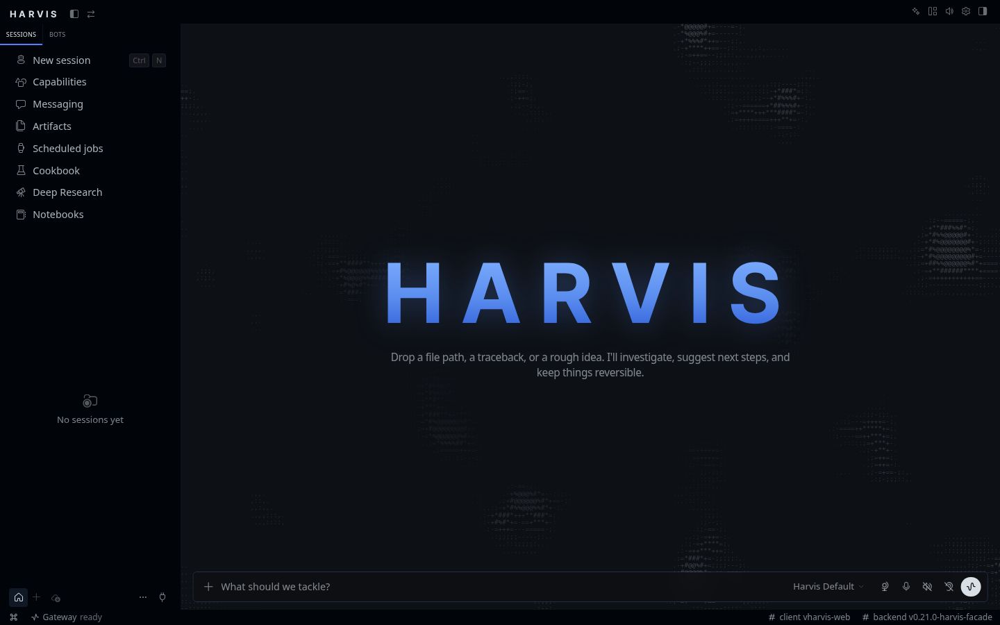
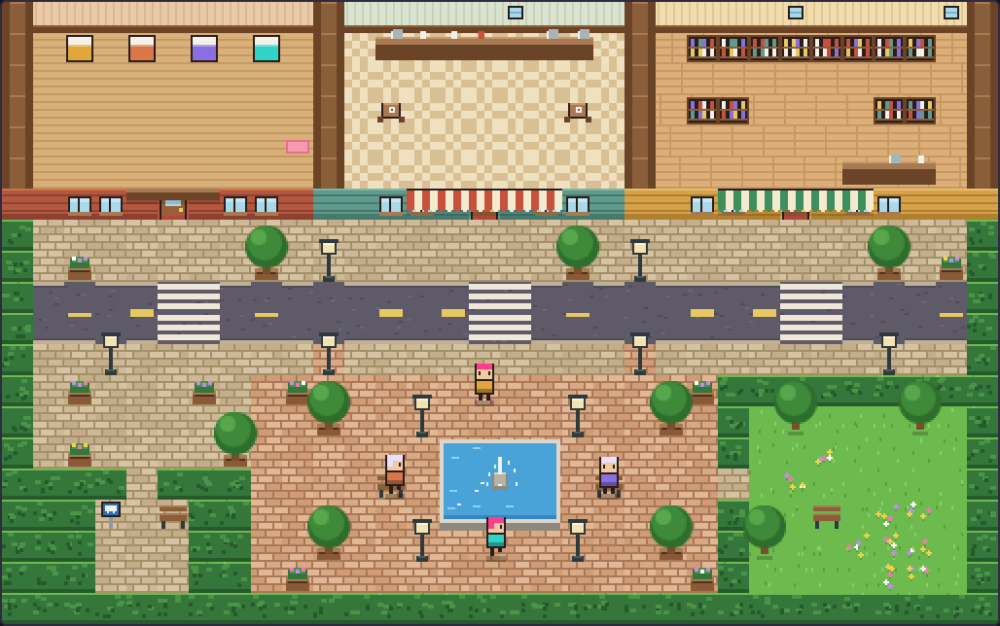

Harvis
A free, open-source workspace you run yourself, for chatting with your own AI models: an alternative to Open WebUI and Claude Desktop.
- MIT license
- Ubuntu and Windows
- Bring your own model server

What you get
- Chat with your own models
- Talk to whatever your model server runs. For reasoning models, the thinking is kept apart from the final answer.
- Agents and tools
- Set up agents with their own model and personality, give them skills, schedule them, and reach them from messaging apps such as Discord and Slack.
- Notebooks and your own sources
- Keep notebooks of the sources you add and ask questions against them. Embeddings are stored in Postgres with pgvector, on your machine.
- Voice
- Speak to it and hear it answer. Speech runs in a voice service on your machine (ONNX), with no GPU needed for Harvis itself.
- Mods and the island
- Each person can change how their Harvis looks and behaves with mods: theme values, small sandboxed widgets and simple rules. A new mod is shown to you for approval before it turns on. The Mods page also has the island, a built-in extra you switch on there.
- Share it on your network
- Open it to the people on your network with
--expose lan. The first account is the admin, and sign-up then stays closed until you open it. People who join read and tick the house rules first, and you can set daily limits and pause or remove accounts.
How it runs
Harvis runs on your computer. The backend is FastAPI with Postgres and pgvector, and the interface is the Hermes desktop UI, served at http://localhost:9000/harvis/.
It ships the workspace and leaves the model to you. The installer looks on your machine for Ollama, LM Studio, llama.cpp or vLLM and uses the first it finds, or you point it at any OpenAI-compatible server. With none running, Harvis still starts and tells you that no model provider is connected, and you can attach one from Settings later.
Your chats, files, settings and saved keys live in the database and folders of the computer running Harvis. Harvis has no analytics, no tracking and no usage reporting, and it does not send your data to the Harvis project. Only what you or the operator set up leaves the machine, such as a chat with a cloud model whose key you added. The full list is in the terms.
Install
Ubuntu 22.04 or 24.04
Install Docker Engine and Docker Compose first, then:
git clone https://github.com/brandoz2255/Harvis.git cd Harvis ./install.sh
Add --yes to skip the questions, or --llm-url with your server's address, such as http://host.docker.internal:11434. Use host.docker.internal or a LAN address, because localhost inside a container means the container.
Windows 11
Install Docker Desktop with WSL 2 integration, and Ollama or another OpenAI-compatible server. From PowerShell in the cloned repository:
.\install.ps1 -CheckOnly .\install.ps1 -Yes
On a machine with an NVIDIA GPU, run .\install.ps1 -VerifyGpu first. If the installer finds a model server on this PC, it points Harvis at it through host.docker.internal. If you pass -LlmUrl yourself, use host.docker.internal, not localhost.
k3s, to host models across your own network
Linux only, and it needs sudo. This installs k3s on the machine and runs Harvis in it, at the same address and with the same data.
./install.sh --k8s
To add another machine as a worker, print the join command on the first one, then run what it shows on the second, from its own Harvis checkout:
./install.sh --k8s-join-command
./install.sh --k8s-off goes back to plain Docker and deletes nothing. ./install.sh --k8s-status shows nodes, pods and addresses.
When it finishes, open http://localhost:9000/harvis/. The first account you make on a fresh install is the admin.
The island
The island is a small pixel-art town that floats over the app. Your assistant and its helpers walk around it. It slows down while a run is busy and stops drawing when you cannot see it. It is off until you turn it on in Settings.

If you own a game whose art you would like on it, you can load that art from your own computer. It stays in your browser, Harvis never uploads or serves it, and Harvis includes none of it.